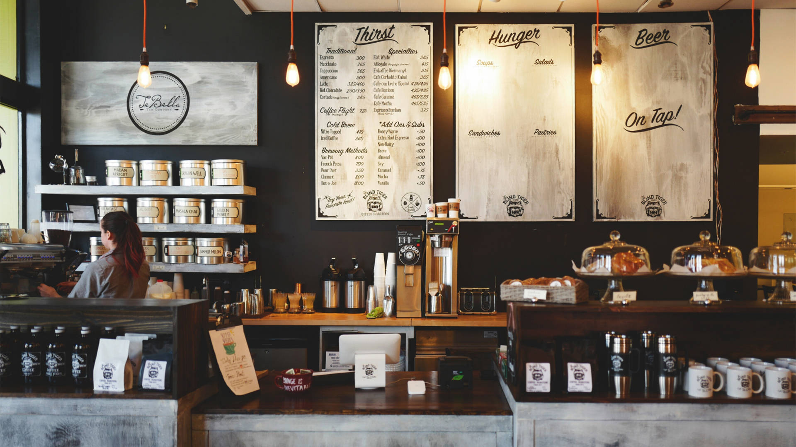

This Tableau project visualizes key insights from London bike rentals, analyzing variables like wind speed, time, temperature, and weather. The interactive dashboards reveal trends and patterns, offering data-driven insights to support informed decision-making.

This Coffee Sales Dashboard in Excel provides a detailed analysis of sales data, including metrics like coffee type, roast type, size, and sales revenue. The dashboard offers a clear view of sales trends and customer behavior, enabling data-driven insights to optimize product offerings and boost sales performance.

This project analyzes COVID-19 data using MySQL to explore infection rates, mortality, vaccination impacts, and trends. It aims to understand virus spread, identify the hardest-hit countries, and assess the effectiveness of vaccination efforts.